Self-attention¶
约 5497 个字 预计阅读时间 18 分钟
CNN以后，我们要讲另外一个常见的Network架构，这个架构叫做Self-Attention，而这个Self-Attention
Sophisticated Input¶
到目前为止，我们的Network的Input都是一个向量，不管是在预测这个，YouTube观看人数的问题上啊，还是影像处理上啊，我们的输入都可以看作是一个向量，然后我们的输出，可能是一个数值，这个是Regression，可能是一个类别，这是Classification
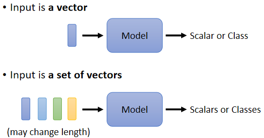
但假设我们遇到更复杂的问题呢，假设我们说输入是多个向量，而且这个输入的向量的数目是会改变的呢
我们刚才在讲影像辨识的时候，我还特别强调我们假设输入的影像大小都是一样的，那现在假设每次我们Model输入的Sequence的数目，Sequence的长度都不一样呢，那这个时候应该要怎么处理？
Vector Set as Input¶
文字处理¶
假设我们今天要Network的输入是一个句子，每一个句子的长度都不一样，每个句子里面词汇的数目都不一样
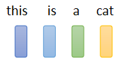
如果我们把一个句子里面的每一个词汇，都描述成一个向量，那我们的Model的输入，就会是一个Vector Set，而且这个Vector Set的大小每次都不一样，句子的长度不一样，那你的Vector Set的大小就不一样
那怎么把一个词汇表示成一个向量，最简单的做法是 One-Hot的Encoding
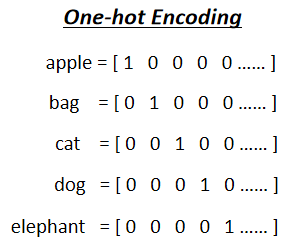
你就开一个很长很长的向量，这个向量的长度跟世界上存在的词汇的数目是一样多的，每一个维度对应到一个词汇，Apple就是100，Bag就是010，Cat就是001，以此类推
但是这样子的表示方法有一个非常严重的问题，它假设所有的词汇彼此之间都是没有关系的，从这个向量里面你看不到：Cat跟Dog都是动物所以他们比较接近，Cat跟Apple一个动物一个植物，所以他们比较不相像。这个向量里面，没有任何语义的资讯
有另外一个方法叫做 Word Embedding
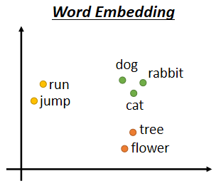
Word Embedding就是，我们会给每一个词汇一个向量，而这个向量是有语义的资讯的
如果你把Word Embedding画出来的话，你会发现，所有的动物可能聚集成一团，所有的植物可能聚集成一团，所有的动词可能聚集成一团等等
Word Embedding，如果你有兴趣的话，可以看一下以下的录影https://youtu.be/X7PH3NuYW0Q，总之你现在在网络上，可以载到一种东西叫做Word Embedding，这个Word Embedding，会给每一个词汇一个向量，而一个句子就是一排长度不一的向量
声音信号¶
一段声音讯号其实是一排向量，怎么说呢，我们会把一段声音讯号取一个范围，这个范围叫做一个 Window
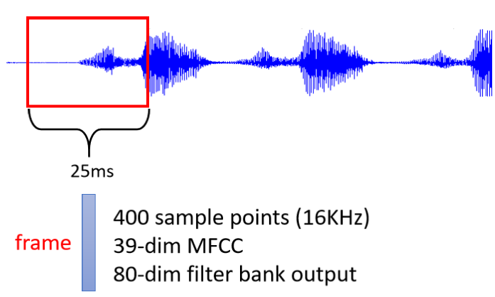
把这个Window里面的资讯描述成一个向量，这个向量就叫做一个 Frame，在语音上，我们会把一个向量叫做一个Frame，通常这个Window的长度就是25个Millisecond
把这么一个小段的声音讯号变成一个Frame，变成一个向量就有百百种做法，那这边就不细讲
一小段25个Millisecond里面的语音讯号，为了要描述一整段的声音讯号，你会把这个Window往右移一点，通常移动的大小是10个Millisecond
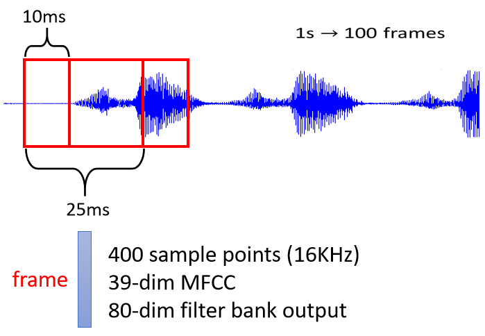
一段声音讯号，你就是用一串向量来表示，而因为每一个Window啊，他们往右移都是移动10个Millisecond，所以一秒钟的声音讯号有100个向量，所以一分钟的声音讯号，就有这个100乘以60，就有6000个向量
所以语音其实很复杂的，一小段的声音讯号，它里面包含的资讯量其实是非常可观的
图¶
一个Graph 一个图，也是一堆向量，我们知道说Social Network就是一个Graph
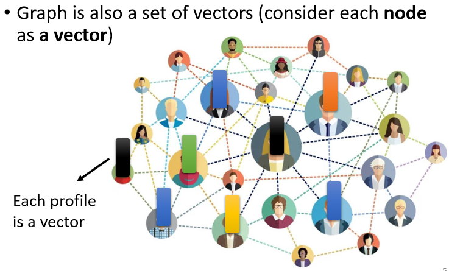
在Social Network上面每一个节点就是一个人，然后节点跟节点之间的edge就是他们两个的关系连接，比如说是不是朋友等等
而每一个节点可以看作是一个向量，你可以拿每一个人的，比如说他的Profile里面的资讯啊，他的性别啊 他的年龄啊，他的工作啊 他讲过的话啊等等，把这些资讯用一个向量来表示
所以一个Social Network 一个Graph，你也可以看做是一堆的向量所组成的
分子信息¶
一个分子，它也可以看作是一个Graph
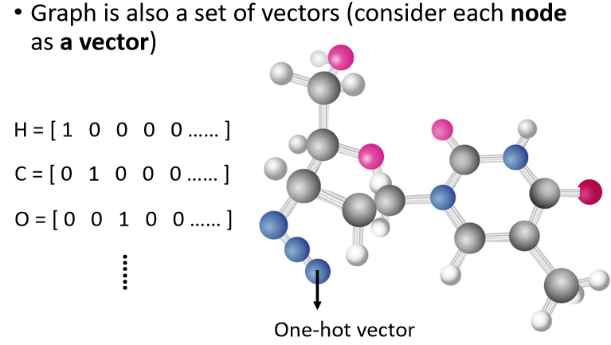
现在Drug Discovery的应用非常地受到重视，尤其是在Covid-19这一段时间，很多人都期待，也许用机器学习，可以在Drug Discovery上面做到什么突破，那这个时候，你就需要把一个分子，当做是你的模型的输入
一个分子可以看作是一个Graph，分子上面的每一个球，也就是每一个原子，可以表述成一个向量
一个原子可以用One-Hot Vector来表示，氢就是1000，碳就是0100，然后这个氧就是0010，所以一个分子就是一个Graph，它就是一堆向量。
What is the output?¶
我们刚才已经看说输入是一堆向量，它可以是文字，可以是语音，可以是Graph，那这个时候，我们有可能有什么样的输出呢，有三种可能性
1. 每一个向量都有一个对应的Label¶
当你的模型，看到输入是四个向量的时候，它就要输出四个Label，而每一个Label，它可能是一个数值，那就是Regression的问题，如果每个Label是一个Class，那就是一个Classification的问题
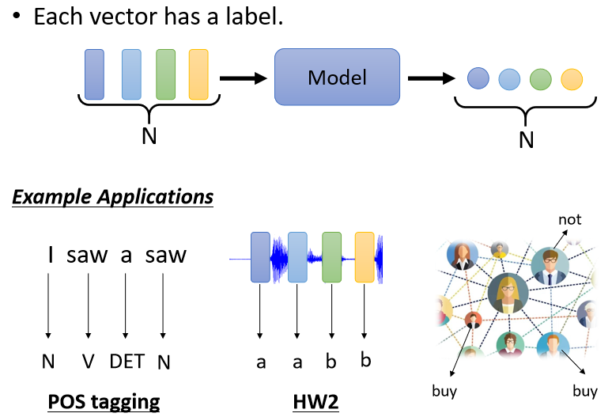
-
举例来说 在文字处理上，假设你今天要做的是 POS Tagging，POS Tagging就是词性标注，你要让机器自动决定每一个词汇 它是什么样的词性，它是名词 还是动词 还是形容词等等
这个任务啊，其实并没有很容易，举例来说，你现在看到一个句子，I saw a saw
这并不是打错，并不是“我看一个看”，而是“我看到一个锯子”，这个第二个saw当名词用的时候，它是锯子，那所以机器要知道，第一个saw是个动词，第二个saw虽然它也是个saw，但它是名词，但是每一个输入的词汇，都要有一个对应的输出的词性
这个任务就是，输入跟输出的长度是一样的Case，这个就是属于第一个类型的输出
-
那如果是语音的话，你可以想想看我们作业二就是这样子的任务
虽然我们作业二，没有给大家一个完整的Sequence，我们是把每一个每一个每一个Vector分开给大家了，但是串起来就是一段声音讯号里面，有一串Vector，每一个Vector你都要决定，它是哪一个Phonetic，这是一个语音辨识的简化版
-
或者是如果是Social Network的话，就是给一个Graph
你的Model要决定每一个节点，它有什么样的特性，比如说他会不会买某一个商品，这样我们才知道说，要不要推荐某一个商品给他，
所以以上就是举输入跟输出 数目一样的例子
2. 一整个Sequence，只需要输出一个Label¶
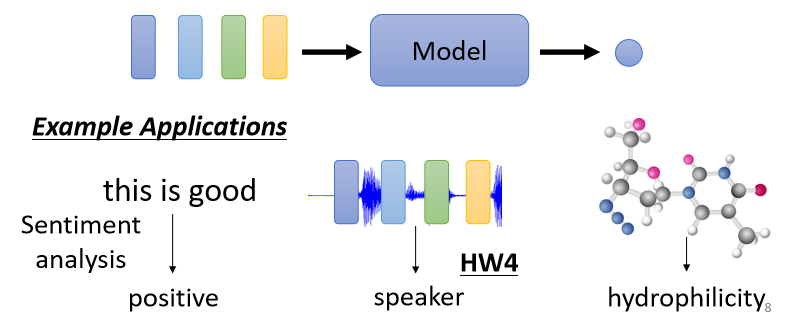
-
举例来说，如果是文字的话，我们就说Sentiment Analysis
Sentiment Analysis就是给机器看一段话，它要决定说这段话是正面的还是负面的
那你可以想象说这种应用很有用，假设你的公司开发了一个产品，这个产品上线了，你想要知道网友的评价怎么样，但是你又不可能一则一则网友的留言都去分析，那也许你就可以用这种，Sentiment Analysis的技术，让机器自动去判读说，当一则贴文里面有提到某个产品的时候，它是正面的 还是负面的，那你就可以知道你的产品，在网友心中的评价怎么样，这个是Sentiment Analysis给一整个句子，只需要一个Label，那Positive或Negative，那这个就是第二类的输出
-
那如果是语音的例子的话呢，在作业四里面我们会做语者辨认，机器要听一段声音，然后决定他是谁讲的
-
或者是如果是Graph的话呢，今天你可能想要给一个分子，然后要预测说这个分子，比如说它有没有毒性，或者是它的亲水性如何，那这就是给一个Graph 输出一个Label
3. 机器要自己决定，应该要输出多少个Label¶
我们不知道应该输出多少个Label，机器要自己决定，应该要输出多少个Label，可能你输入是N个向量，输出可能是N'个Label，为什么是N'，机器自己决定
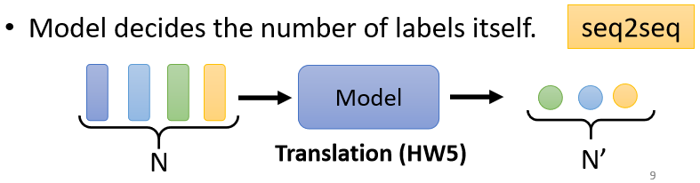
这种任务又叫做 ==sequence to sequence==的任务，那我们在作业五会有sequence to sequence的作业，所以这个之后我们还会再讲
- 翻译就是sequence to sequence的任务，因为输入输出是不同的语言，它们的词汇的数目本来就不会一样多
- 或者是语音辨识也是，真正的语音辨识也是一个sequence to sequence的任务，输入一句话，然后输出一段文字，这也是一个sequence to sequence的任务
第二种类型有作业四，感兴趣可以去看看作业四的程式，那因为上课时间有限，所以上课，我们今天就先只讲第一个类型，也就是输入跟输出数目一样多的状况
Sequence Labeling¶
那这种输入跟输出数目一样多的状况又叫做 Sequence Labeling，你要给Sequence里面的每一个向量，都给它一个Label，那要怎么解Sequence Labeling的问题呢
那直觉的想法就是我们就拿个Fully-Connected的Network
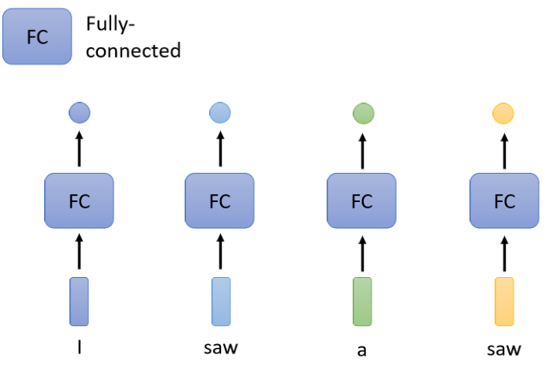
然后虽然这个输入是一个Sequence，但我们就各个击破，不要管它是不是一个Sequence，把每一个向量，分别输入到Fully-Connected的Network里面
然后Fully-Connected的Network就会给我们输出，那现在看看，你要做的是Regression还是Classification，产生正确的对应的输出，就结束了，
那这么做显然有非常大的瑕疵，假设今天是，词性标记的问题，你给机器一个句子，I saw a saw，对Fully-Connected Network来说，后面这一个saw跟前面这个saw完全一模一样，它们是同一个词汇啊
既然Fully-Connected的Network输入同一个词汇，它没有理由输出不同的东西
但实际上，你期待第一个saw要输出动词，第二个saw要输出名词，但对Network来说它不可能做到，因为这两个saw 明明是一模一样的，你叫它一个要输出动词，一个要输出名词，它会非常地困惑，完全不知道要怎么处理
所以怎么办，有没有可能让Fully-Connected的Network，考虑更多的，比如说上下文的Context的资讯呢
这是有可能的，你就把前后几个向量都串起来，一起丢到Fully-Connected的Network就结束了
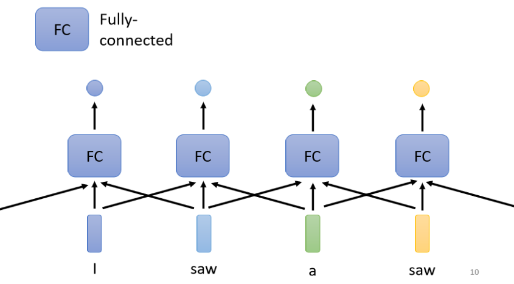
在作业二里面，我们不是只看一个Frame，去判断这个Frame属于哪一个Phonetic，也就属于哪一个音标，而是看这个Frame的前面五个加后面五个，也就总共看十一个Frame，来决定它是哪一个音标
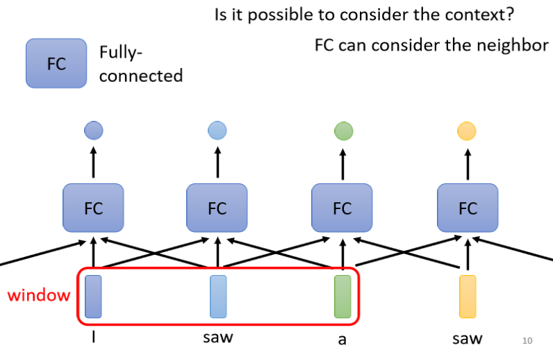
所以我们可以给Fully-Connected的Network，一整个Window的资讯，让它可以考虑一些上下文的，跟我现在要考虑的这个向量相邻的其他向量的资讯
但是这样子的方法还是有极限的，但是如果今天我们有某一个任务，不是考虑一个Window就可以解决的，而是要考虑一整个Sequence才能够解决的话，那要怎么办呢
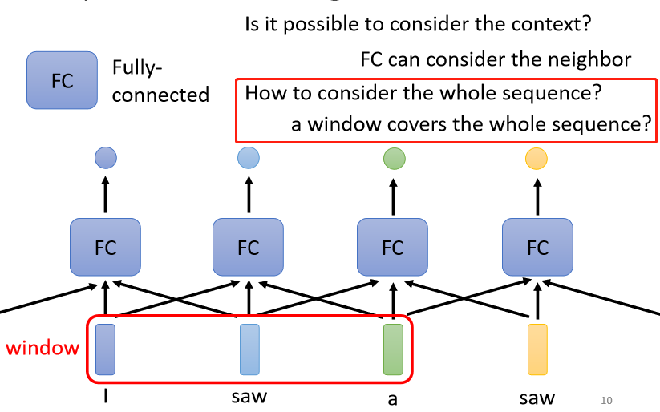
那有人可能会想说这个很容易，我就把Window开大一点啊，大到可以把整个Sequence盖住就结束了
但是，今天Sequence的长度是有长有短的，我们刚才有说，我们输入给我们的Model的Sequence的长度，每次可能都不一样
如果你今天说我真的要开一个Window，把整个Sequence盖住，那你可能要统计一下你的训练资料，然后看看你的训练资料里面，最长的Sequence有多长，然后开一个Window比最长的Sequence还要长，你才有可能把整个Sequence盖住
但是你开一个这么大的Window，意味着说你的Fully-Connected的Network需要非常多的参数，那可能不只运算量很大，可能还容易Overfitting
所以有没有更好的方法，来考虑整个Input Sequence的资讯呢，这就要用到我们接下来要跟大家介绍的，==Self-Attention==这个技术
Self-Attention¶
Self-Attention的运作方式就是，Self-Attention会吃一整个Sequence的资讯
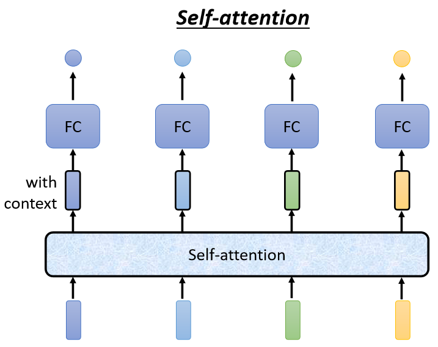
然后你Input几个Vector，它就输出几个Vector，比如说你这边Input一个深蓝色的Vector，这边就给你一个另外一个Vector
这边给个浅蓝色，它就给你另外一个Vector，这边输入4个Vector，它就Output 4个Vector
那这4个Vector有什么特别的地方呢，这4个Vector，他们都是考虑一整个Sequence以后才得到的，那等一下我会讲说Self-Attention，怎么考虑一整个Sequence的资讯
所以这边每一个向量，我们特别给它一个黑色的框框代表说它不是一个普通的向量
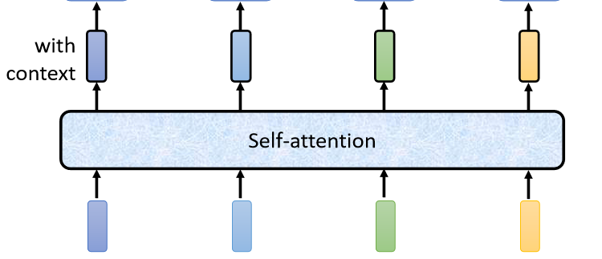
如此一来你这个Fully-Connected的Network，它就不是只考虑一个非常小的范围，或一个小的Window，而是考虑整个Sequence的资讯，再来决定现在应该要输出什么样的结果，这个就是Self-Attention。
Self-Attention不是只能用一次，你可以叠加很多次
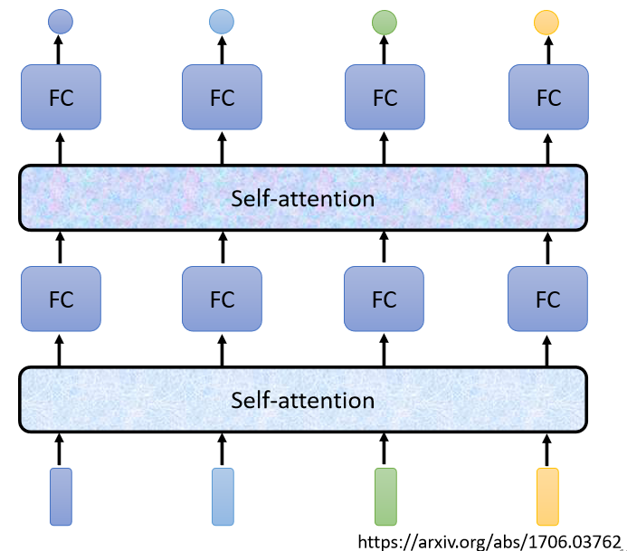
可以Self-Attention的输出，通过Fully-Connected Network以后，再做一次Self-Attention，Fully-Connected的Network，再过一次Self-Attention，再重新考虑一次整个Input Sequence的资讯，再丢到另外一个Fully-Connected的Network，最后再得到最终的结果
所以可以把Fully-Connected的Network，跟Self-Attention交替使用
- Self-Attention处理整个Sequence的资讯
- Fully-Connected的Network，专注于处理某一个位置的资讯
- 再用Self-Attention，再把整个Sequence资讯再处理一次
- 然后交替使用Self-Attention跟Fully-Connected
有关Self-Attention，最知名的相关的文章，就是《Attention is all you need》。那在这篇Paper里面呢，Google提出了 Transformer 这样的Network架构，那Transformer就是变形金刚，所以提到这个Network的时候呢，我们就会有变形金刚这个形象
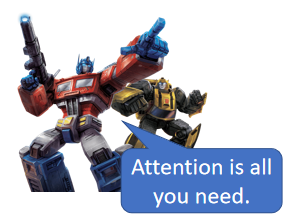
Transformer我们今天还不会讲到，但我们之后会讲到，Transformer里面一个最重要的Module就是Self-Attention，它就是变形金刚的火种源
那这篇Paper最厉害的地方，就是它有一个霸气的名字Attention is all you need。
那其实像Self-Attention这样的架构，最早我并不会说它是出现在《Attention is all you need》这样的Paper，因为其实很多更早的Paper，就有提出过类似的架构，只是不见得叫做Self-Attention，比如说叫做Self-Matching，或者是叫别的名字，不过呢是Attention is all you need这篇Paper把Self-Attention这个Module发扬光大
那Self-Attention是怎么运作的呢
Self-Attention过程¶
Self-Attention的Input，它就是一串的Vector，那这个Vector可能是你整个Network的Input，它也可能是某个Hidden Layer的Output，所以我们这边不是用\(x\)来表示它，
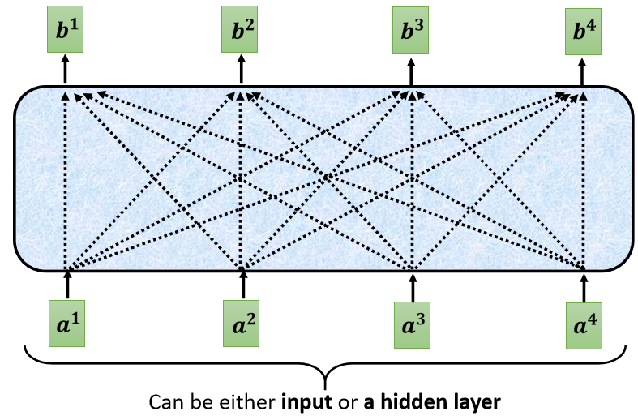
我们用\(a\)来表示它，代表它有可能是前面已经做过一些处理，它是某个Hidden Layer的Output，那Input一排a这个向量以后，Self-Attention要Output另外一排b这个向量
那这每一个b都是考虑了所有的a以后才生成出来的，所以这边刻意画了非常非常多的箭头，告诉你\(b^1\)考虑了\(a^1\)到\(a^4\)产生的，\(b^2\)考虑\(a^1\)到\(a^4\)产生的，\(b^3 b^4\)也是一样，考虑整个input的sequence，才产生出来的
那接下来呢就是要跟大家说明，怎么产生\(b^1\)这个向量，那你知道怎么产生\(b^1\)这个向量以后，你就知道怎么产生剩下\(b^1 b^2 b^3 b^4\)剩下的向量
这里有一个特别的机制，这个机制是根据\(a^1\)这个向量，找出整个很长的sequence里面，到底哪些部分是重要的，哪些部分跟判断\(a^1\)是哪一个label是有关系的，哪些部分是我们要决定\(a^1\)的class，决定\(a^1\)的regression数值的时候所需要用到的资讯
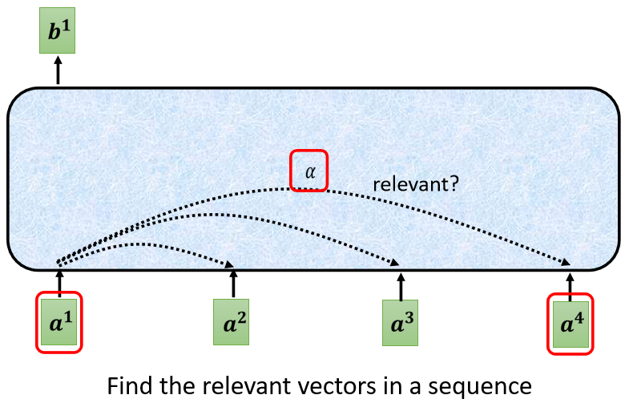
每一个向量跟\(a^1\)的关联的程度，用一个数值叫α来表示
这个self-attention的module，怎么自动决定两个向量之间的关联性呢，你给它两个向量\(a^1\)跟\(a^4\)，它怎么决定\(a^1\)跟\(a^4\)有多相关，然后给它一个数值α呢，那这边呢你就需要一个计算attention的模组
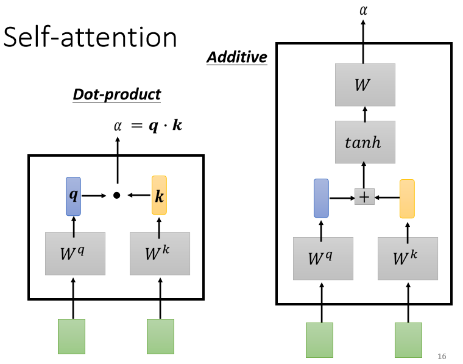
这个计算attention的模组，就是拿两个向量作为输入，然后它就直接输出α那个数值，
计算这个α的数值有各种不同的做法
-
比较常见的做法呢，叫做用 dot product，输入的这两个向量分别乘上两个不同的矩阵，左边这个向量乘上\(W^q\)这个矩阵得到矩阵\(q\)，右边这个向量乘上\(W^k\)这个矩阵得到矩阵\(k\)
再把\(q\)跟\(k\)做dot product，就是把他们做element-wise的相乘，再全部加起来以后就得到一个 scalar，这个scalar就是α，这是一种计算α的方式
-
有另外一个叫做 ==Additive==的计算方式，它的计算方法就是，把同样这两个向量通过\(W^q\) \(W^k\)，得到\(q\)跟\(k\)，那我们不是把它做Dot-Product，是把它这个串起来，然后丢到这个过一个Activation Function
然后再通过一个Transform，然后得到α
总之有非常多不同的方法，可以计算Attention，可以计算这个α的数值，可以计算这个关联的程度
但是在接下来的讨论里面，我们都只用左边这个方法，这也是今日最常用的方法，也是用在Transformer里面的方法
那你就要把这边的\(a^1\)去跟这边的\(a^2 a^3 a^4\)，分别都去计算他们之间的关联性，也就是计算他们之间的α
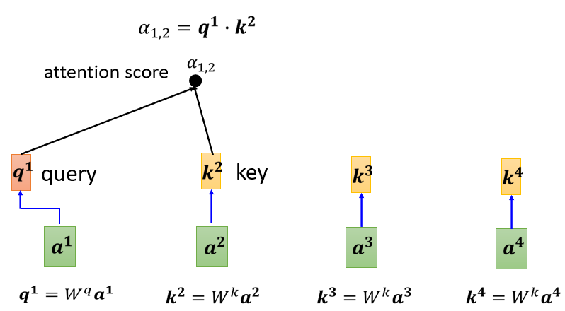
你把\(a^1\)乘上\(W^q\)得到\(q^1\)，那这个q有一个名字，我们叫做 Query，它就像是你搜寻引擎的时候，去搜寻相关文章的问题，就像搜寻相关文章的关键字，所以这边叫做Query
然后接下来呢，\(a^2 a^3 a^4\)你都要去把它乘上\(W^k\)，得到\(k\)这个Vector，\(k\)这个Vector叫做 Key，那你把这个Query q1，跟这个Key k2，算Inner-Product就得到α
我们这边用\(α_{1，2}\)来代表说，Query是1提供的，Key是2提供的时候，这个1跟2他们之间的关联性，这个α这个关联性叫做 Attention的Score，叫做Attention的分数，
接下来也要跟\(a^3 a^4\)来计算
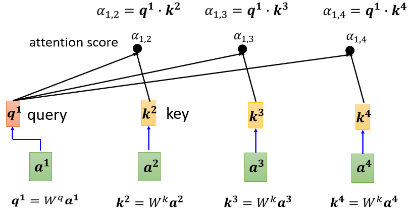
把\(a_3\)乘上\(W^k\)，得到另外一个Key也就是\(k^3\)，\(a^4\)乘上\(W^k\)得到\(k^4\)，然后你再把\(k^3\)这个Key，跟\(q^1\)这个Query做Inner-Product，得到1跟3之间的关联性，得到1跟3的Attention，你把\(k^4\)跟\(q^1\)做Dot-Product，得到\(α_{1，4}\)，得到1跟4之间的关联性
其实一般在实作时候，\(q^1\)也会跟自己算关联性，自己跟自己计算关联性这件事情有多重要，你可以自己在做作业的时候试试看，看这件事情的影响大不大了
计算出，a1跟每一个向量的关联性以后，接下来这边会接入一个Soft-Max
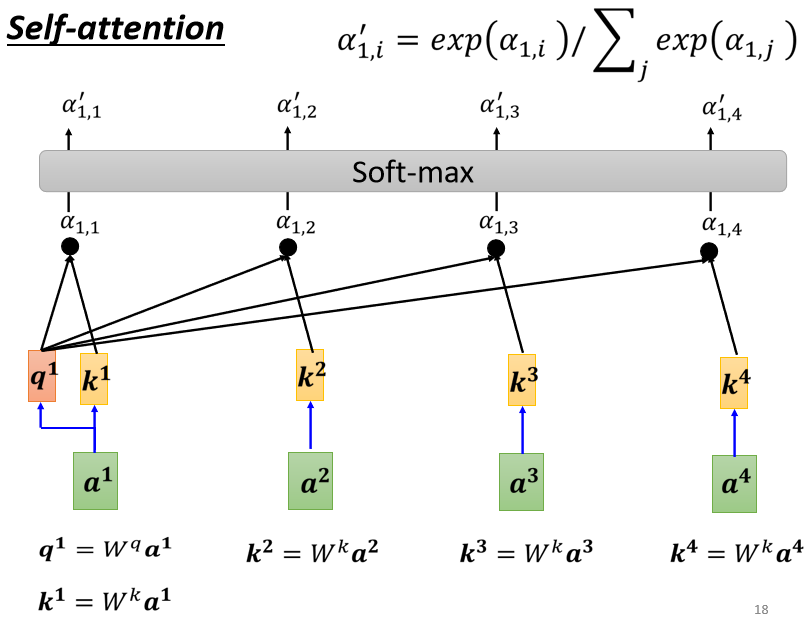
这个Soft-Max跟分类的时候的那个Soft-Max是一模一样的，所以Soft-Max的输出就是一排α，所以本来有一排α，通过Soft-Max就得到\(α'\)
这边你不一定要用Soft-Max，用别的替代也没问题，比如说有人尝试过说做个ReLU，这边通通做个ReLU，那结果发现还比Soft-Max好一点，所以这边你不一定要用Soft-Max，这边你要用什么Activation Function都行，你高兴就好，你可以试试看，那Soft-Max是最常见的，那你可以自己试试看，看能不能试出比Soft-Max更好的结果
接下来得到这个\(α'\)以后，我们就要根据这个\(α'\)去抽取出这个Sequence里面重要的资讯，根据这个α我们已经知道说，哪些向量跟\(a^1\)是最有关系的，怎么抽取重要的资讯呢，
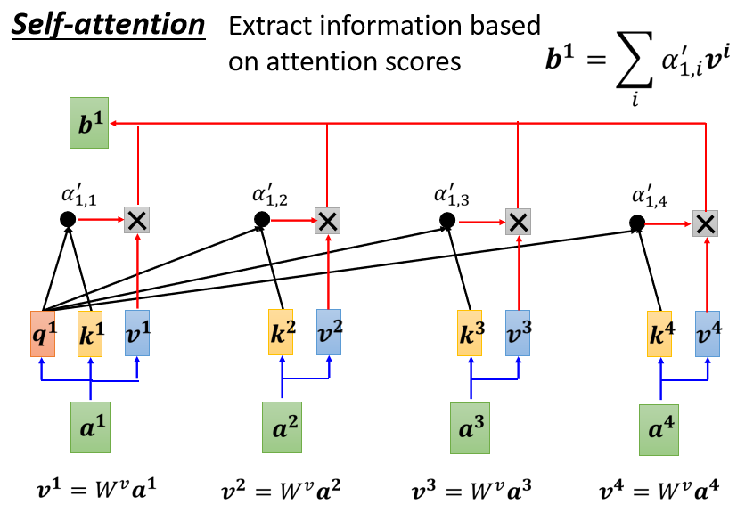
-
首先把\(a^1\)到\(a^4\)这边每一个向量，乘上\(W^v\)得到新的向量，这边分别就是用\(v^1 v^2 v^3 v^4\)来表示
-
接下来把这边的\(v^1\)到\(v^4\)，每一个向量都去乘上Attention的分数，都去乘上\(α'\)
-
然后再把它加起来，得到\(b^1\)
如果某一个向量它得到的分数越高，比如说如果\(a^1\)跟\(a^2\)的关联性很强，这个\(α'\)得到的值很大，那我们今天在做Weighted Sum以后，得到的\(b^1\)的值，就可能会比较接近\(v^2\)
所以谁的那个Attention的分数最大，谁的那个\(v\)就会Dominant你抽出来的结果
所以这边呢我们就讲了怎么从一整个Sequence 得到\(b^1\)
本文总阅读量次